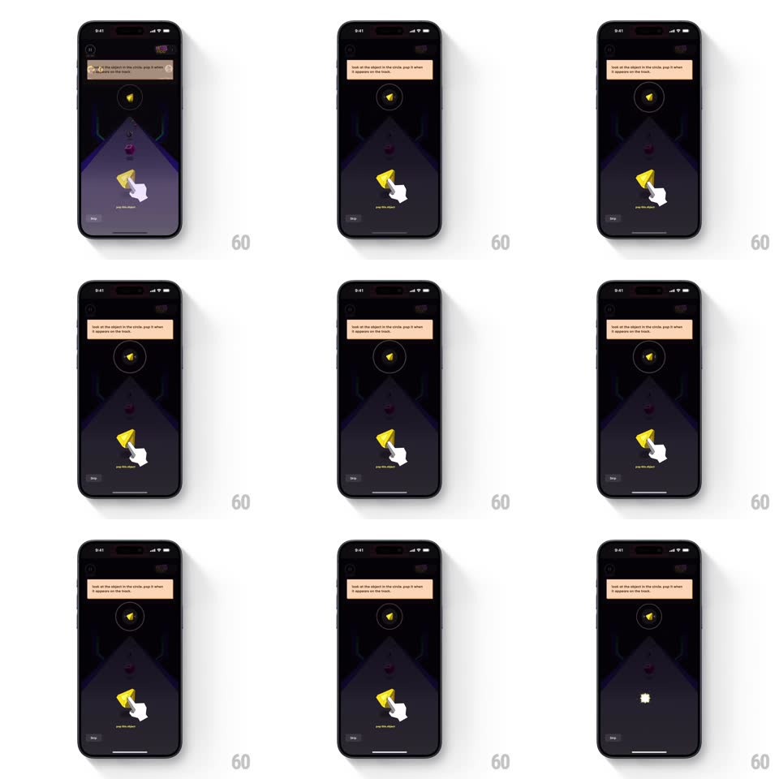

Media
Frame-by-frame

Rebuild this interaction 1:1: CRED Pop Challenge's correct-pop onboarding - a cream tooltip at the top reads "look at the object in the circle, pop it when it appears on the track", a white cartoon hand points at the target object below, and on tap the object bursts into sparkles while the tooltip and hand vanish.

Rebuild this interaction 1:1: CRED Pop Challenge's correct-pop onboarding - a cream tooltip at the top reads "look at the object in the circle, pop it when it appears on the track", a white cartoon hand points at the target object below, and on tap the object bursts into sparkles while the tooltip and hand vanish. ## Integration Integration: stack-agnostic spec - springs given as stiffness/damping, timed motions as duration + curve; map every value to your framework and animation library of choice. ## Scene Pop Challenge game screen (dark, purple perspective track). Top: a cream tooltip bubble with the instruction and a small tail. A yellow cone sits in a dashed circle at the top of the track (the preview); a matching cone on the track below is the tap target, with a white gloved hand cursor bouncing on it. "Skip" link bottom-left. ## Motion spec Pattern: guided tap with burst dismissal. - Tooltip slides down from the top edge (translateY -100% -> 0, 350ms, ease-out) and holds. - Hand cursor loops a press-down bounce on the target (translateY 0 -> 8px -> 0, ~700ms, ease-in-out), with a "pop this object" micro-label. - On tap: the object pops - it scales up briefly (1 -> 1.3, 120ms) then bursts into 6-8 sparkle particles radiating outward (~400ms, decelerating, gravity off), and the hand fades out (150ms). - Tooltip slides back up (300ms, ease-in) once the burst completes. ## Calibration - The burst is particles, not an explosion graphic - small diamond/spark shapes in the object's colors. - The hand's bounce never stops until the tap lands. ## Reduced motion Object fades out with a single scale-up (200ms); tooltip crossfades out. ## Don't miss - The preview circle and the track object are the same item - the tooltip ties them together. - "Skip" stays tappable the whole time and never animates.